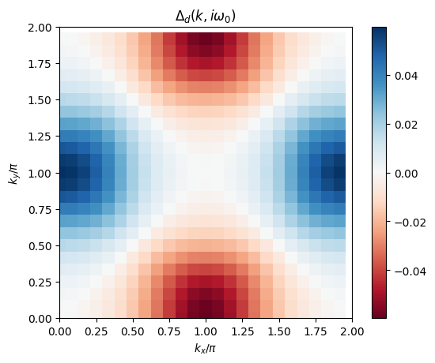
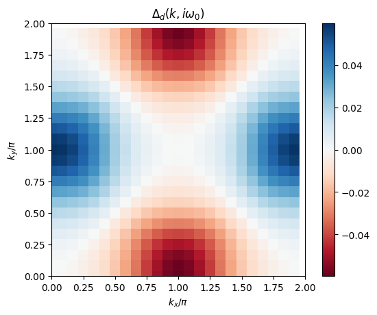

FLEX approximation#
Author: Niklas Witt
Theory of FLEX in the paramagnetic state#
The FLuctuation EXchange (FLEX) approximation is a perturbative diagrammatic method that was first introduced by Bickers et al. [Bickers et al., 1989, Bickers and Scalapino, 1989]. It can be derived from a Luttinger-Ward functional [Luttinger and Ward, 1960] containing an infinite series of closed bubble and ladder diagrams. Physically, this means that in FLEX the exchange of spin and charge fluctuations is treated self-consistently. As such, it is suitable for studying systems with strong spin fluctuations, e.g., in Fermi liquids or near quantum critical points. Here, we want to give a code example of the single-orbital limit of FLEX with a local Hubbard interaction \(U\) to illustrate the practical implementation of the sparse-ir package for diagrammatic methods.
For the implementation of a multi-orbital code, please have a look at [Witt et al., 2021] and FLEX_IR package.
Set of FLEX equations#
We review the set of equations that need to be solved self-consistently in the FLEX approximation. The goal is to solve the Dyson equation
for the interacting Green function \(G\) from the non-interacting Green function \(G_0(i\omega_n,\boldsymbol{k}) = [i\omega_n - (\varepsilon_{\boldsymbol{k}}-\mu)]^{-1}\) with single-particle dispersion \(\varepsilon_{\boldsymbol{k}}\) and chemical potential \(\mu\) as well as self-energy \(\Sigma\) as a function of (fermionic) Matsubara frequencies \(\omega_n=(2n+1)\pi T\) and momentum \(\boldsymbol{k}\). Using the Green function, we calculate the irreducible susceptibility (“bubble diagram”) as
\(N_{\boldsymbol{k}}\) denotes the number of \(\boldsymbol{k}\)-points. This equation is a convolution typical for diagrammatic methods. It can be easily evaluated by Fourier transforming to imaginary-time and real space, resulting in a simple multiplication
In our practical implementation, we will perform this step using the sparse-ir package. The infinite sum of bubble and ladder diagrams can be resummed to yield a Berk-Shrieffer type interaction [Berk and Schrieffer, 1966]
with spin and charge susceptibility like in the Random-Phase-Approximation (RPA)
The self-energy can be calculated from the convolution
which Fourier transformed to real space and imaginary times takes the form
Thus, we have the set of self-consistent equations complete. In every iteration, the chemical potential \(\mu\) needs to be adjusted to keep the electron density \(n\) fixed. It can be calculated via solving
with a factor 2 from spin degeneracy and \(0^+ = \lim_{\eta\to 0+} \eta\) by using some root finding algorithm like bisection method or Brent’s method.
Notes on practical implementation#
When implementing the fully self-consistent FLEX loop, a few points need to be treated carefully which we adress in the following:
The constant Hartree term \(V_{\mathrm{H}} = U\) in the interaction \(V\) and respective self-energy term \(\Sigma_H = U\frac{n}{2}\) can be absorbed into the definition of the chemical potential \(\mu\). Otherwise we would have to treat this term separately, since the IR basis cannot model the \(\delta\)-peak in frequency space well/compactly. In this case, evaluate the term analytically and add it after the Fourier transformation step.
We include a mixing \(p<1\) in each iteration step, such that the Green function of step \(n+1\) is partially constructed from the old and new Green function as \(G^{n+1} = p\,G^{n+1} + (1-p)\,G^{n}\). This smoothes too strong oscillations in the convergence loop.
A bottleneck of the FLEX approximation is the case of too strong interactions. The solution turns numerically unstable if the denominator of \(\chi_{\mathrm{s}}\) approaches zero, i.e., \(U\max\!\{\chi_{0}\} \to 1\). Typically, this can be solved by starting with a smaller \(U\) value and slowly turning it up. We call this “\(U\) renormalization”.
Code implementation#
We implement the FLEX method for the simple case of a square lattice Hubbard model with dispersion \(\varepsilon_{\boldsymbol{k}} = -2t\,[\cos(k_x) + \cos(k_y)]\) with nearest-neighbor hopping \(t\) which sets the energy scale of our system (bandwidth \(W = 8t\)). First, we load all necessary basic modules that we are going to need in implementing FLEX and visualizing results:
import numpy as np
import scipy as sc
import scipy.optimize
from warnings import warn
import sparse_ir
%matplotlib inline
import matplotlib.pyplot as plt
Parameter setting#
### System parameters
t = 1 # hopping amplitude
W = 8*t # bandwidth
wmax = 10 # set wmax >= W
T = 0.1 # temperature
beta = 1/T # inverse temperature
n = 0.85 # electron filling, here per spin per lattice site (n=1: half filling)
U = 4 # Hubbard interaction
### Numerical parameters
nk1, nk2 = 24, 24 # number of k_points along one repiprocal crystal lattice direction k1 = kx, k2 = ky
nk = nk1*nk2
IR_tol = 1e-10 # desired accuary for l-cutoff of IR basis functions
sfc_tol = 1e-4 # desired accuracy for self-consistent iteration
maxiter = 30 # maximal number of iterations in self-consistent cycle
mix = 0.2 # mixing parameter for new green function
U_maxiter = 50 # maximal number of iteration steps in U renormalization loop
Generating meshes#
We need to generate a \(\boldsymbol{k}\)-mesh as well as set up the IR basis functions on a sparse \(\tau\) and \(i\omega_n\) grid. Then we can calculate the dispersion on this mesh. In addition, we set calculation routines to Fourier transform \(k\leftrightarrow r\) and \(\tau\leftrightarrow i\omega_n\) (via IR basis).
#### Initiate fermionic and bosonic IR basis objects
IR_basis_set = sparse_ir.FiniteTempBasisSet(beta, wmax, eps=IR_tol)
class Mesh:
"""
Holding class for k-mesh and sparsely sampled imaginary time 'tau' / Matsubara frequency 'iwn' grids.
Additionally it defines the Fourier transform routines 'r <-> k' and 'tau <-> l <-> wn'.
"""
def __init__(self,IR_basis_set,nk1,nk2):
self.IR_basis_set = IR_basis_set
# generate k-mesh and dispersion
self.nk1, self.nk2, self.nk = nk1, nk2, nk1*nk2
self.k1, self.k2 = np.meshgrid(np.arange(self.nk1)/self.nk1, np.arange(self.nk2)/self.nk2)
self.ek = -2*t*( np.cos(2*np.pi*self.k1) + np.cos(2*np.pi*self.k2) ).reshape(nk)
# lowest Matsubara frequency index
self.iw0_f = np.where(self.IR_basis_set.wn_f == 1)[0][0]
self.iw0_b = np.where(self.IR_basis_set.wn_b == 0)[0][0]
### Generate a frequency-momentum grid for iwn and ek (in preparation for calculating the Green function)
# frequency mesh (for Green function)
self.iwn_f = 1j * self.IR_basis_set.wn_f * np.pi * T
self.iwn_f_ = np.tensordot(self.iwn_f, np.ones(nk), axes=0)
# ek mesh
self.ek_ = np.tensordot(np.ones(len(self.iwn_f)), self.ek, axes=0)
def smpl_obj(self, statistics):
""" Return sampling object for given statistic """
smpl_tau = {'F': self.IR_basis_set.smpl_tau_f, 'B': self.IR_basis_set.smpl_tau_b}[statistics]
smpl_wn = {'F': self.IR_basis_set.smpl_wn_f, 'B': self.IR_basis_set.smpl_wn_b }[statistics]
return smpl_tau, smpl_wn
def tau_to_wn(self, statistics, obj_tau):
""" Fourier transform from tau to in via IR basis """
smpl_tau, smpl_wn = self.smpl_obj(statistics)
obj_tau = obj_tau.reshape((smpl_tau.tau.size, self.nk1, self.nk2))
obj_l = smpl_tau.fit(obj_tau, axis=0)
obj_wn = smpl_wn.evaluate(obj_l, axis=0).reshape((smpl_wn.wn.size, self.nk))
return obj_wn
def wn_to_tau(self, statistics, obj_wn):
""" Fourier transform from iwn to tau via IR basis """
smpl_tau, smpl_wn = self.smpl_obj(statistics)
obj_wn = obj_wn.reshape((smpl_wn.wn.size, self.nk1, self.nk2))
obj_l = smpl_wn.fit(obj_wn, axis=0)
obj_tau = smpl_tau.evaluate(obj_l, axis=0).reshape((smpl_tau.tau.size, self.nk))
return obj_tau
def k_to_r(self,obj_k):
""" Fourier transform from k-space to real space """
obj_k = obj_k.reshape(-1, self.nk1, self.nk2)
obj_r = np.fft.fftn(obj_k,axes=(1,2))
obj_r = obj_r.reshape(-1, self.nk)
return obj_r
def r_to_k(self,obj_r):
""" Fourier transform from real space to k-space """
obj_r = obj_r.reshape(-1, self.nk1, self.nk2)
obj_k = np.fft.ifftn(obj_r,axes=(1,2))/self.nk
obj_k = obj_k.reshape(-1, self.nk)
return obj_k
FLEX loop solver#
We wrap the calculation steps of the FLEX loop in the FLEXSolver class. We use the Mesh class defined above to perform calculation steps.
class FLEXSolver:
def __init__(self, mesh, U, n, sigma_init=0, sfc_tol=1e-4,
maxiter=100, U_maxiter=10, mix=0.2, verbose=True):
"""
Solver class to calculate the FLEX loop self-consistently.
After initializing the Solver by `solver = FLEXSolver(mesh, U, n, **kwargs)`
it can be run by `solver.solve()`.
"""
## Set internal parameters for the solve
self.U = U
self.n = n
self.mesh = mesh
self.sigma = sigma_init
self.sfc_tol = sfc_tol
self.maxiter = maxiter
self.U_maxiter = U_maxiter
self.mix = mix
self.verbose = verbose
## Set initial Green function and irreducible susceptibility
# NOT running the FLEXSolver.solve instance corresponds to staying on RPA level
self.mu = 0
self.mu_calc()
self.gkio_calc(self.mu)
self.grit_calc()
self.ckio_calc()
#%%%%%%%%%%% Loop solving instance
def solve(self):
""" FLEXSolver.solve() executes FLEX loop until convergence """
# check whether U < U_crit! Otherwise, U needs to be renormalized.
if np.amax(np.abs(self.ckio))*self.U >= 1:
self.U_renormalization()
# perform loop until convergence is reached:
for it in range(self.maxiter):
sigma_old = self.sigma
self.loop()
# check whether solution is converged.
sfc_check = np.sum(abs(self.sigma-sigma_old))/np.sum(abs(self.sigma))
if self.verbose:
print(it, sfc_check)
if sfc_check < self.sfc_tol:
print("FLEX loop converged at desired accuracy")
break
def loop(self):
""" FLEX loop """
gkio_old = self.gkio
# calculate interaction and self-energy
self.V_calc()
self.sigma_calc()
# set new chemical potential and apply mixing
self.mu_calc()
self.gkio_calc(self.mu)
self.gkio = self.mix*self.gkio + (1-self.mix)*gkio_old
# calculate new irreducible susceptibility
self.grit_calc()
self.ckio_calc()
#%%%%%%%%%%% U renormalization loop instance
def U_renormalization(self):
""" Loop for renormalizing U if Stoner enhancement U*max{chi0} >= 1. """
print('WARNING: U is too large and the spin susceptibility denominator will diverge/turn unphysical!')
print('Initiate U renormalization loop.')
# save old U for later
U_old = self.U
# renormalization loop may run infinitely! Insert break condition after U_it_max steps
U_it = 0
while U_old*np.amax(np.abs(self.ckio)) >= 1:
U_it += 1
# remormalize U such that U*chi0 < 1
self.U = self.U / (np.amax(np.abs(self.ckio))*self.U + 0.01)
print(U_it, self.U, U_old)
# perform one shot FLEX loop
self.loop()
# reset U
self.U = U_old
# break condition for too many steps
if U_it == self.U_maxiter:
print('Iteration number of U renormalization reached break condition!')
break
print('Leaving U renormalization...')
#%%%%%%%%%%% Calculation steps
def gkio_calc(self, mu):
""" calculate Green function G(iw,k) """
self.gkio = (self.mesh.iwn_f_ - (self.mesh.ek_ - mu) - self.sigma)**(-1)
def grit_calc(self):
""" Calculate real space Green function G(tau,r) [for calculating chi0 and sigma] """
# Fourier transform
grit = self.mesh.k_to_r(self.gkio)
self.grit = self.mesh.wn_to_tau('F', grit)
def ckio_calc(self):
""" Calculate irreducible susciptibility chi0(iv,q) """
ckio = self.grit * self.grit[::-1, :]
# Fourier transform
ckio = self.mesh.r_to_k(ckio)
self.ckio = self.mesh.tau_to_wn('B', ckio)
def V_calc(self):
""" Calculate interaction V(tau,r) from RPA-like spin and charge susceptibility for calculating sigma """
# check whether U is too large and give warning
if np.amax(np.abs(self.ckio))*self.U >= 1:
warn("U*max(chi0) >= 1! Paramagnetic phase is left and calculations will turn unstable!")
# spin and charge susceptibility
self.chi_spin = self.ckio / (1 - self.U*self.ckio)
self.chi_charge = self.ckio / (1 + self.U*self.ckio)
V = 3/2*self.U**2 * self.chi_spin + 1/2*self.U**2 * self.chi_charge - self.U**2 * self.ckio
# Constant Hartree Term V ~ U needs to be treated extra, since it cannot be modeled compactly by the IR basis.
# In the single-band case, the Hartree term can be absorbed into the chemical potential.
# Fourier transform
V = self.mesh.k_to_r(V)
self.V = self.mesh.wn_to_tau('B', V)
def sigma_calc(self):
""" Calculate self-energy Sigma(iw,k) """
sigma = self.V * self.grit
# Fourier transform
sigma = self.mesh.r_to_k(sigma)
self.sigma = self.mesh.tau_to_wn('F', sigma)
#%%%%%%%%%%% Setting chemical potential mu
def calc_electron_density(self, mu):
""" Calculate electron density from Green function """
self.gkio_calc(mu)
gio = np.sum(self.gkio,axis=1)/self.mesh.nk
g_l = self.mesh.IR_basis_set.smpl_wn_f.fit(gio)
g_tau0 = self.mesh.IR_basis_set.basis_f.u(0)@g_l
n = 1 + np.real(g_tau0)
n = 2*n #for spin
return n
def mu_calc(self):
""" Find chemical potential for a given filling n0 via brent's root finding algorithm """
n_calc = self.calc_electron_density
n0 = self.n
f = lambda mu : n_calc(mu) - n0
self.mu = sc.optimize.brentq(f, np.amax(self.mesh.ek)*3, np.amin(self.mesh.ek)*3)
Execute FLEX loop#
# initialize calculation
IR_basis_set = sparse_ir.FiniteTempBasisSet(beta, wmax, eps=IR_tol)
mesh = Mesh(IR_basis_set, nk1, nk2)
solver = FLEXSolver(mesh, U, n, sigma_init=0, sfc_tol=sfc_tol, maxiter=maxiter, U_maxiter=U_maxiter, mix=mix)
# perform FLEX loop
solver.solve()
WARNING: U is too large and the spin susceptibility denominator will diverge/turn unphysical!
Initiate U renormalization loop.
1 2.3679802691723246 4
2 2.663153050959837 4
3 2.9528432011381662 4
4 3.2372665027430307 4
5 3.5175353553187674 4
6 3.795074730530492 4
Leaving U renormalization...
0 0.08848089073957867
1 0.1456952273446696
2 0.02261581413132345
3 0.011893505710483355
4 0.0076277090501765885
5 0.0053379144764270055
6 0.003893254237015432
7 0.002897136006147828
8 0.0021763170209256667
9 0.0016421546589770073
10 0.001242109183393509
11 0.0009414202269489906
12 0.0007150642109596822
13 0.0005445167053352716
14 0.0004159378093377019
15 0.000318898170469232
16 0.00024554695819848174
17 0.00018994846474836764
18 0.00014768275513405362
19 0.00011544934333004365
20 9.07504952514189e-05
FLEX loop converged at desired accuracy
Visualize results#
# plot 2D k-dependence of lowest Matsubara frequency of e.g. Green function
plt.pcolormesh(2*mesh.k1.reshape(nk1,nk2), 2*mesh.k2.reshape(nk1,nk2), np.real(solver.gkio[mesh.iw0_f].reshape(mesh.nk1,mesh.nk2)), shading='auto')
ax = plt.gca()
ax.set_xlabel('$k_x/\pi$')
ax.set_xlim([0,2])
ax.set_ylabel('$k_y/\pi$')
ax.set_ylim([0,2])
ax.set_aspect('equal')
ax.set_title('Re $G(k,i\omega_0)$')
plt.colorbar()
plt.show()
# plot 2D k-dependence of lowest Matsubara frequency of e.g. chi0
plt.pcolormesh(2*mesh.k1.reshape(nk1,nk2), 2*mesh.k2.reshape(nk1,nk2), np.real(solver.ckio[mesh.iw0_b].reshape(mesh.nk1,mesh.nk2)), shading='auto')
ax = plt.gca()
ax.set_xlabel('$k_x/\pi$')
ax.set_xlim([0,2])
ax.set_ylabel('$k_y/\pi$')
ax.set_ylim([0,2])
ax.set_aspect('equal')
ax.set_title('Re $\chi_0(k,i\nu_0)$')
plt.colorbar()
plt.show()
Linearized Eliashberg equation#
One example for which FLEX can be used is the description of superconductivity arising from spin-fluctuation-mediated pairing. While it is possible to perform FLEX calculations in the symmetry-broken state (Nambu phase), we will here focus on determining the superconducting critical temperature \(T_{\mathrm{c}}\) by solving the linearized Eliashberg equation
for the gap function \(\Delta\) (‘order parameter’) in either the spin singlet (\(\xi=\mathrm{S}\)) or spin triplet (\(\xi=\mathrm{T}\)) pairing channel. \(F^{(\xi)} = -|G|^2\Delta^{(\xi)}\) is the anomalous Green function. Just like the convoluted sum for the self-energy, we can compute this equation easily after Fourier transforming to
The interaction of each spin-pairing channelspin-pairing channel is given by
The gap equation is effectively an eigenvalue problem with \(\Delta\) being the eigenvector and \(\mathcal{K}\sim V |G|^2\) the matrix. Since we are only interested in the phase transition of the dominant symmetry pairing channel, we can solve for the largest eigenvalue \(\lambda\) via the power method.
In this tutorial, we want to calculate the superconducting transition line for the dominant singlet \(d\equiv d_{x^2-y^2}\)-wave symmetric gap function. We initialize the calculation with a generic function of this symmetry (constant in frequency space):
Code implementation#
Linearized Eliashberg solver#
As for the FLEX loop, we implement a solver class that takes the FLEXSolver instance as an argument to solve the linearized Eliashberg equation.
class LinearizedGapSolver:
def __init__(self, FLEX_solver, maxiter=50, sfc_tol=1e-4, verbose=True):
"""
Solver class for solving the linearized gap equation using the power method.
It takes FLEX results as an input.
"""
## Initialize necessary quantities from converged (normal state) FLEX calculation
self.mesh = FLEX_solver.mesh
self.gkio = FLEX_solver.gkio
self.chi_spin = FLEX_solver.chi_spin
self.chi_charge = FLEX_solver.chi_charge
self.U = FLEX_solver.U
self.maxiter = maxiter
self.sfc_tol = sfc_tol
self.verbose = verbose
## Initialize trial gap function
# Here we focus on a d-wave symmetric solution
self.delta0 = (np.cos(2*np.pi*self.mesh.k1) - np.cos(2*np.pi*self.mesh.k2)).reshape(self.mesh.nk)
self.delta = np.tensordot(np.ones(len(self.mesh.iwn_f)), self.delta0, axes=0)
self.delta = self.delta / np.linalg.norm(self.delta) # normalize initial guess
## Initialize interaction
self.V_singlet_calc()
## Initialize eigenvalue
self.lam = 0
def solve(self):
""" Solving instance to find eigenvalue from power method """
for it in range(self.maxiter):
lam_old = self.lam
delta_old = self.delta
# calculate gap function in real space
self.frit_calc()
delta = self.V_singlet * self.frit
# Fourier transform to momentum space
delta = self.mesh.r_to_k(delta)
delta = self.mesh.tau_to_wn('F',delta)
# calculate eigenvalue
self.lam = np.real( np.sum(np.conj(delta)*delta_old) )
self.delta = delta / np.linalg.norm(delta)
# check for convergence
if self.verbose:
print(it, self.lam, abs(self.lam-lam_old))
if abs(self.lam-lam_old) < self.sfc_tol:
break
#%%%%%%%%%%% Calculation steps
def V_singlet_calc(self):
""" Set up interaction in real space and imaginary time """
V = 3/2*self.U**2 * self.chi_spin - 1/2*self.U**2 * self.chi_charge
# Constant Hartree Term V ~ U needs to be treated extra, since it cannot be modeled by the IR basis.
# In the special case of d-wave symmetry, it can be neglected as the momentum sum vanishes due to symmetry.
# Fourier transform
V = self.mesh.k_to_r(V)
self.V_singlet = self.mesh.wn_to_tau('B', V)
def frit_calc(self):
""" Calculate (linearized) anomalous Green function F = -|G|^2 * delta for evaluating the gap equation """
self.fkio = - self.gkio*np.conj(self.gkio)*self.delta
# Fourier transform
frit = self.mesh.k_to_r(self.fkio)
self.frit = self.mesh.wn_to_tau('F', frit)
Executing the gap equation solver#
gap_solver = LinearizedGapSolver(solver, maxiter=maxiter, sfc_tol=sfc_tol)
gap_solver.solve()
print("The superconducting eigenvalue at T={} is lambda_d={:.3f}".format(T,gap_solver.lam))
0 0.11528824873273935 0.11528824873273935
1 0.40623096520052665 0.2909427164677873
2 0.44950820725158913 0.04327724205106248
3 0.45623539005748937 0.006727182805900234
4 0.4578340878880656 0.0015986978305762567
5 0.45821272019047465 0.0003786323024090321
6 0.45831455837669466 0.00010183818622000462
7 0.4583410132652021 2.6454888507443375e-05
The superconducting eigenvalue at T=0.1 is lambda_d=0.458
Visualize results#
# plot 2D k-dependence of lowest Matsubara frequency of the gap vs. initial guess
plt.figure()
plt.pcolormesh(2*mesh.k1.reshape(nk1,nk2), 2*mesh.k2.reshape(nk1,nk2), np.real(gap_solver.delta0.reshape(nk1,nk2)) / np.linalg.norm(gap_solver.delta0), cmap='RdBu', shading='auto')
ax = plt.gca()
ax.set_xlabel('$k_x/\pi$')
ax.set_xlim([0,2])
ax.set_ylabel('$k_y/\pi$')
ax.set_ylim([0,2])
ax.set_aspect('equal')
ax.set_title('$\\Delta^0_d(k)$')
plt.colorbar()
plt.figure()
plt.pcolormesh(2*mesh.k1.reshape(nk1,nk2), 2*mesh.k2.reshape(nk1,nk2), np.real(gap_solver.delta[mesh.iw0_f].reshape(mesh.nk1,mesh.nk2)), cmap='RdBu', shading='auto')
ax = plt.gca()
ax.set_xlabel('$k_x/\pi$')
ax.set_xlim([0,2])
ax.set_ylabel('$k_y/\pi$')
ax.set_ylim([0,2])
ax.set_aspect('equal')
ax.set_title('$\\Delta_d(k,i\omega_0)$')
plt.colorbar()
plt.show()
 

# plot 2D k-dependence of lowest Matsubara frequency of the anomalous Green function
plt.figure()
plt.pcolormesh(2*mesh.k1.reshape(nk1,nk2), 2*mesh.k2.reshape(nk1,nk2), np.real(gap_solver.fkio[mesh.iw0_f].reshape(mesh.nk1,mesh.nk2)), cmap='RdBu', shading='auto')
ax = plt.gca()
ax.set_xlabel('$k_x/\pi$')
ax.set_xlim([0,2])
ax.set_ylabel('$k_y/\pi$')
ax.set_ylim([0,2])
ax.set_aspect('equal')
ax.set_title('Re $F(k,i\omega_0)$')
plt.colorbar()
plt.show()
Example: Antiferromagnetic fluctuations and \(d\)-wave superconductivity in the square-lattice Hubbard model#
In this section, we will reproduce Figs. 3(b) and 4 of [Arita et al., 2000] or respective Fig. 2(a) of [Witt et al., 2021] using the Sparse-IR FLEX code developed above. It shows (i) the momemtum dependence of the static spin susceptibility and (ii) the temperature dependence of the superconducting eigenvalue \(\lambda_d\) (as calculated above) and the inverse maximal spin susceptibility \(1/\chi_{\mathrm{s,max}}\), which indicates tendency towards (quasi-)magnetic ordering.
In order to perform calculations for different \(T\), we will initiate the IR basis with a \(\Lambda = \beta_{\mathrm{max}}\omega_{\mathrm{max}}\) that is sufficient for the lowest temperature \(T_{\mathrm{min}} = 1/\beta_{\mathrm{max}}\) we plan to do calculations for. Since \(T\) changes, we have to reevaluate the IR basis set instance for every step. We start from high \(T\) and decrease its value. We initialize a new FLEX loop at a lower \(T\) by using the previously converged solution, since it does not change drastically and speeds up convergence.
You can simply execute the following two code blocks which will first perform the calculation and then generate a figure similar to those in the references above.
#%%%%%%%%%%%%%%% Parameter settings
print('Initialization...')
# system parameters
t = 1 # hopping amplitude
n = 0.85 # electron filling, here per spin per lattice site (n=1: half filling)
U = 4 # Hubbard interaction
W = 8*t # bandwidth
wmax = 10 # set wmax >= W
T_values = np.array([0.08,0.07,0.06,0.05,0.04,0.03,0.025]) # temperature
# numerical parameters
nk1, nk2 = 64, 64 # k-mesh sufficiently dense!
nk = nk1*nk2
IR_Lambda = 10**3 # dimensionless IR parameter >= w_max * beta_min = 400
IR_tol = 1e-8 # desired accuary for l-cutoff of IR basis functions
sfc_tol = 1e-4 # desired accuracy for self-consistent iteration
it_max = 30 # maximal number of iterations in self-consistent cycle
mix = 0.2 # mixing parameter for new
U_it_max = 50 # maximal number of iteration steps in U renormalization loop
# initialize first IR basis set (no recalculation, just reevaluation afterwards)
beta_init = 1/T_values[0]
IR_basis_set = sparse_ir.FiniteTempBasisSet(beta_init, IR_Lambda/beta_init, eps=IR_tol)
# set initial self_energy - will be set to previous calculation step afterwards
sigma_init = 0
# empty arrays for results
lam_T = np.empty((len(T_values)))
chiSmax_T = np.empty((len(T_values)))
#%%%%%%%%%%%%%%% Calculation for different T values
for T_it, T in enumerate(T_values):
print("Now: T = {}".format(T))
beta = 1/T
# initialize meshes
IR_basis_set = sparse_ir.FiniteTempBasisSet(beta, IR_Lambda/beta, eps=IR_tol, sve_result=IR_basis_set.sve_result)
mesh = Mesh(IR_basis_set, nk1, nk2)
# calculate FLEX loop
solver = FLEXSolver(mesh, U, n, sigma_init=sigma_init, sfc_tol=sfc_tol,
maxiter=maxiter, U_maxiter=U_maxiter, mix=mix, verbose=False)
solver.solve()
sigma_init = solver.sigma
# calculate linearized gap equation
gap_solver = LinearizedGapSolver(solver, maxiter=maxiter, sfc_tol=sfc_tol, verbose=False)
gap_solver.solve()
# save data for plotting
lam_T[T_it] = gap_solver.lam#
chiSmax_T[T_it] = np.real(np.amax(solver.chi_spin))
if T == 0.03:
chi_s_plt = np.real(solver.chi_spin)[mesh.iw0_b].reshape(mesh.nk1,mesh.nk2)
Initialization...
Now: T = 0.08
WARNING: U is too large and the spin susceptibility denominator will diverge/turn unphysical!
Initiate U renormalization loop.
1 2.287146792442896 4
2 2.48568473299046 4
3 2.68907801859603 4
4 2.895247551054327 4
5 3.1004194839039716 4
6 3.306837927956384 4
7 3.5156369594110144 4
8 3.7272843762098593 4
9 3.9417173199390554 4
Leaving U renormalization...
FLEX loop converged at desired accuracy
Now: T = 0.07
FLEX loop converged at desired accuracy
Now: T = 0.06
FLEX loop converged at desired accuracy
Now: T = 0.05
FLEX loop converged at desired accuracy
Now: T = 0.04
FLEX loop converged at desired accuracy
Now: T = 0.03
FLEX loop converged at desired accuracy
Now: T = 0.025
FLEX loop converged at desired accuracy
#%%%%%%%%%%%%%%%% Plot results in a combined figure
import matplotlib.gridspec as gridspec
fig = plt.figure(figsize=(10,4),constrained_layout=True)
spec = gridspec.GridSpec(ncols=2, nrows=1, figure=fig)
f_ax1 = fig.add_subplot(spec[0, 0])
f_ax2 = fig.add_subplot(spec[0, 1])
# first panel with momentum dependence of static spin susceptibility
k_HSP = np.concatenate((np.linspace(0,1,mesh.nk1//2),
np.linspace(1,2,mesh.nk2//2),
np.linspace(2,2+np.sqrt(2),mesh.nk1//2)))
chi_s_HSP = np.concatenate((chi_s_plt[:mesh.nk1//2, 0],
chi_s_plt[mesh.nk1//2, :mesh.nk2//2],
[chi_s_plt[it,it] for it in range(mesh.nk1//2)][::-1]))
f_ax1.plot(k_HSP, chi_s_HSP,'-')
f_ax1.set_xlim([0,2+np.sqrt(2)])
f_ax1.set_xticks([0,1,2,2+np.sqrt(2)])
f_ax1.set_xticklabels(['$\Gamma$','X','M','$\Gamma$'])
f_ax1.set_ylim([0,26])
f_ax1.set_xlabel('')
f_ax1.set_ylabel('$\\chi_{\\mathrm{s}}(i\\nu=0,{\\bf{q}})$', fontsize=14)
f_ax1.grid()
# second panel with T-dependence of lambda_d and 1/chi_s,max
f_ax2.plot(T_values, lam_T, '-x', label='$\lambda_d$')
f_ax2.plot(T_values, 1/chiSmax_T, '-x', label='$1/\chi_{\mathrm{s},\mathrm{max}}$')
f_ax2.set_xlim([0.01,0.08])
f_ax2.set_ylim([0,1])
f_ax2.set_xlabel('$T/t$', fontsize=14)
f_ax2.set_ylabel('$\lambda_d$, $1/\chi_{\mathrm{s},\mathrm{max}}$', fontsize=14)
f_ax2.legend()
f_ax2.grid()
plt.show()